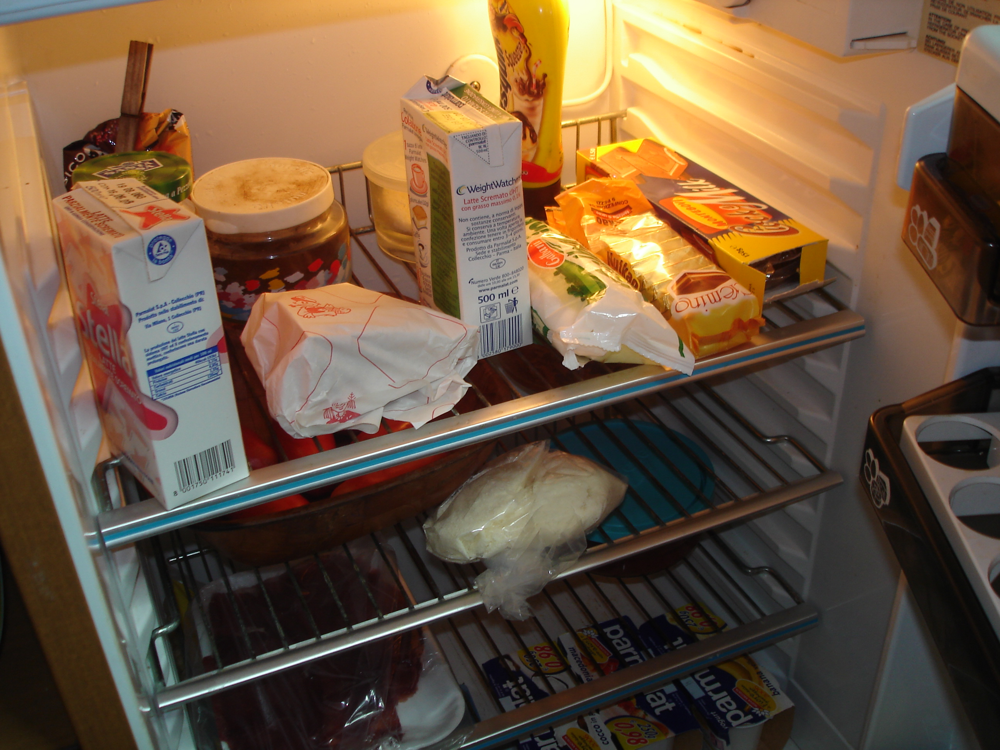

Consertos Domésticos
Guias passo a passo com verificações permitidas para iniciantes, alertas de segurança e orientações claras sobre quando acionar um profissional qualificado.
Guias disponíveis nesta categoria

Porta rangendo ou raspando: como lubrificar e ajustar dobradiças
Veja como eliminar rangidos nas dobradiças sem manchar a madeira, reapertar parafusos folgados e saber quando chamar marceneiro.

Geladeira Consul não gela a parte de baixo: o que verificar
Verificações externas seguras (saídas de ar, controle, borracha da porta e degelo natural de 24h) e quando chamar técnico.

Máquina de lavar não centrifuga: causas e o que verificar
O que checar fora da tomada (distribuição de roupa, painel, mangueira e filtro) e sinais que exigem assistência.

Como ajustar fechadura de porta: lubrificação e maçaneta
Lubrificação a seco do cilindro com grafite em pó, reaperto de maçaneta frouxa e quando chamar um chaveiro.

Como desentupir pia sem soda cáustica: obstruções leves
Uso do desentupidor de borracha, limpeza manual do sifão e alertas de segurança contra produtos químicos no ralo.